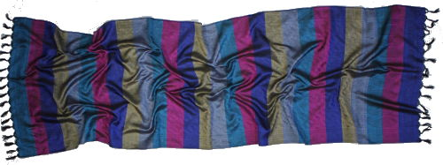

<div class="container">
    <div class="row">
        <div class="col-md-6">
            <br><br><br><br><br><br>
            
        </div>
        <div class="col-md-6">
            <div class="about-text">
                <div class="section-title">
                    <h4>Несколько слов </h4>
                    <h2><strong>о платках</strong></h2>
                    <h4>из Бенаресского шёлка</h4>
                    <hr>
                    <div class="clearfix"></div>
                </div>
                <p class="intro">История возникновения бенаресского шёлка начинается в священном индийском городе Варанаси. Первые упоминания о шёлке датируются началом Первого века до нашей эры. Каждый платок изготавливается вручную.
Экспонат платка из бенаресского шёлка представлен в Московском музее Востока.</p>
                <ul class="about-list">
                    <li>
                        <span class="fa fa-dot-circle-o"></span>
{#                        <strong>Натуральный шелк</strong> - <em> из волшебной страны индии</em>#}
                        <em>Шёлковый платок не накапливает статическое электричество.</em>
                    </li>
                    <li>
                        <span class="fa fa-dot-circle-o"></span>
                        <strong>Большой выбор</strong> - <em>под любое настроение</em>
                    </li>
                    <li>
                        <span class="fa fa-dot-circle-o"></span>
                        <strong>Ручной труд</strong> - <em> технология изготавления как и ХХ лет назад</em>
                    </li>
                </ul>
            </div>
        </div>
    </div>
</div>